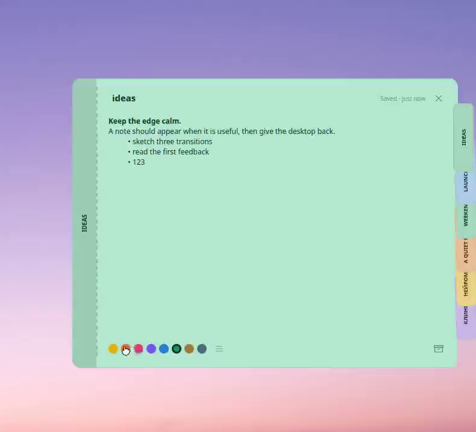
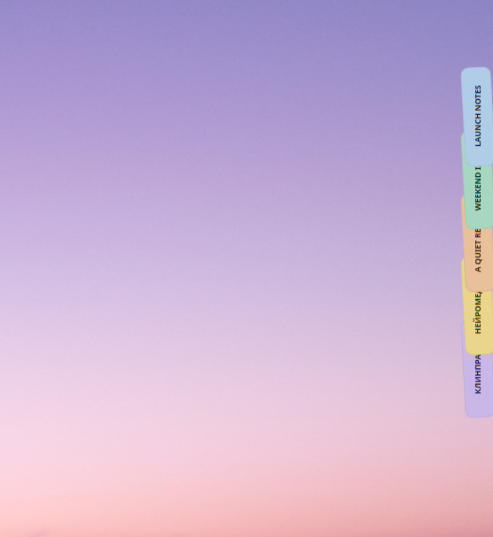
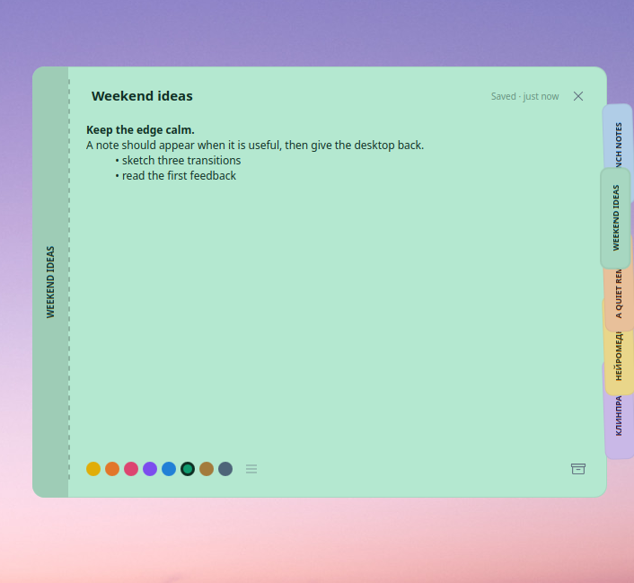

Notes, right where work happens.
Noty Linux keeps small, local notes on the edge of your desktop. The first shipping integration is KDE Plasma 6.
Other Linux desktops are a future direction, not a promise for this release.
A small interaction, shown without a mockup.
This is the same running widget: the tab deck opens, a note is edited, its paper colour changes, and the desktop becomes quiet again.

Use the full sequence anywhere.
The page keeps the source frame intact: the card and the tabs at the right edge are both visible. The matching GIF is ready for a README or community post.
{kind=link}
One note, two distances.
Tabs keep several notes reachable without a pile of windows. Opening one gives it the space to write, format, recolour, archive, or simply close it again.

Open full-size image

Open full-size image
- Keep it local
- Notes and archive recovery stay on the machine. Retention is configurable, and removing a palette colour safely falls back to the first colour.
- Make it yours
- Choose colours, reorder the palette, use optional ruled paper, adjust typography, and switch among Noty, Adaptive, and Plasma appearance modes.
- Stay out of the way
- Spread the tabs across the available edge, then open only the note you need. The interface is translated into ten languages and uses one compact Phosphor Regular icon system throughout.
Start with Plasma.
Noty Linux is free and open source. Clone the repository, install the Plasma package, then add Noty from Plasma’s widget picker.
$ git clone https://github.com/rodmanvictor/noty-linux.git
$ cd noty-linux
$ kpackagetool6 --type Plasma/Applet --upgrade plasmoid/packageRequires KDE Plasma 6 and the standard Plasma package tool.
Read the guide in your language.
Every guide covers installation, current Plasma 6 limits, local data, and the same verification commands. The widget interface itself is available in ten languages.